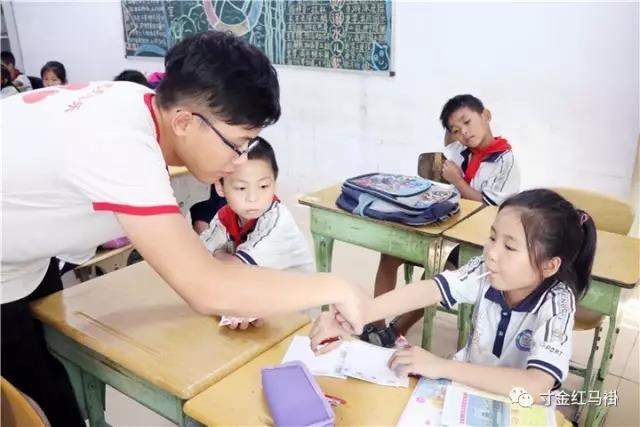
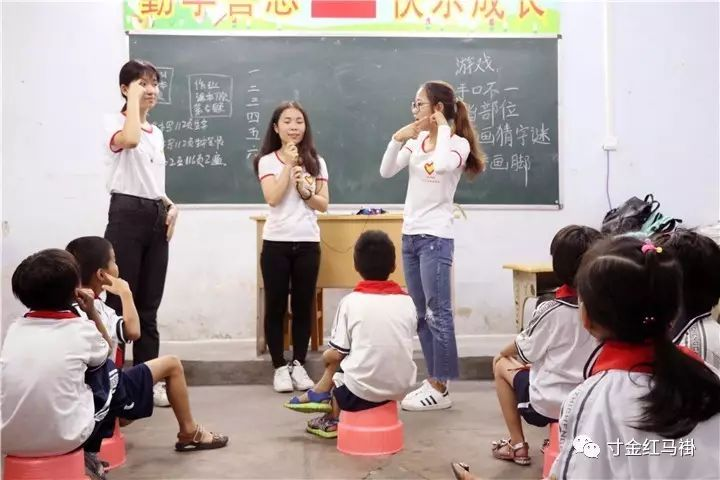

到达目的地后，志愿者们便开始了场地的布置。一部分志愿者将桌子搬至指定地点，一部分志愿者打气球装饰场地，另外一部分则将游戏规则和项目写在卡纸上。据笔者现场观察，整个室外场地一共设置了五个摊位的游戏点，分别是拼图、跳格子、踢毽子、抛圈圈、跳绳。而室内的四个班级，分别进行你画我猜、手口不一、抢板凳、吹乒乓球等游戏。 下课铃声响起后，室内室外的游戏便也随之开始。小朋友们带着激动的心情来到操场参加游戏。参与整个游戏中小朋友们都热情高涨，积极参与，每一个游戏点都排起了长长的队伍；在拼图游戏中，小朋友们都高度集中；在跳格子游戏中，小朋友们也都能够准确无误的跳完每一个格子。孩子们热情洋溢、志愿者心感安慰。游戏是儿童的天地，在这个志愿者搭建的小小天地里，小朋友们天真无邪的笑着，玩闹着。 在活动期间，有些志愿者用气球折成小狗的模样送给小朋友们。有些志愿者在阳光下维持着纪律和颁发奖品，并积极引导小朋友们正确的玩游戏。看到小朋友们绽放出满足的笑容，志愿者们付出的的汗水也是值得的。 在活动的最后，华南小学的校长临时召开会议，并邀请在场的所有志愿者参与。会议中，校长对此次“庆六一”的活动给予了很高的评价。“此次活动举办得非常有意义，孩子们不仅能在活动中快乐成长，而且还能在游戏中获得知识，懂得学会合作与信任。本校的师生们都希望志愿者们往后可以多开展此类活动，让孩子们能够在感受爱的过程中快乐成长，学会感恩。”这是来自华南小学校长在会议中发表的感言。 在支教的活动中，你也许会紧张，会担心，会激动，会兴奋，但所有不安的情绪最后都会被小朋友的笑容化解，击中你内心深处的柔软。这种魔力由你，由我，由我们一起实现。我们不仅仅是在收获经验，更是在播种和传递爱心，下一个播种人，你在哪里？我们在这等着你。
大 型
活 动
 1. 经过大概二十分钟的步行，我们来到了支教地点即湛江市赤岭小学。来到赤岭小学的大门口后，我们排成两列慢慢地走进小学校园内。待下午第一节课的下课铃声响起，我和我的队友们先到三年级（4）班教室和孩子们互动，并做好上课的准备。上课了，我们叫小朋友依次回到座位，随后我们依次进行简单的自我介绍。首先，由我们的主讲进行课堂的讲解，通过展示一张张带有可爱动物的ppt,吸引着小孩子们好奇的目光。小孩子们都听得津津有味，非常踊跃地举手回答问题。在和小孩子们讲解完动物百科后，副讲便开始了我们的游戏环节。我们进行的游戏有口不对心，还有传小球的游戏，逐渐地把上课的气氛拉上了高潮。小孩子们的热情高涨，有些还兴奋得站起来手舞足蹈的，当然这时我们的纪律委员会立马上前去制止这种淘气可爱的举动。下课后，我们先叫孩子们排成两列，并送孩子们出门。在送孩子们出门时，小孩子们都很有礼貌地跟我们告别，让我们的心里充满了喜悦。 短暂的支教活动就这样过去了，让我再一次体会到小孩子们的单纯善良可爱。我不禁感叹年轻真好，我们都应该保持一颗年轻的心态去面对生活，这样我们的生活将会变得更加美好纯粹。
 2. 主讲的我，负责教学的是画画，教小朋友们画了小猫咪，小熊猫，布朗熊以及小熊猫，由于主讲的魅力所在，小朋友们听得很入迷，纷纷动手跟着“小沛哥哥”学习起来。在主讲的课堂上，印象最深的还是小朋友们都画得很快，所以教学内容也比预想的多，另外个别同学做好之后也是不和其他同学一样举手的，这时候就需要我们负责纪律的几位小姐姐一起提醒他们，鼓励他们，让他们融入班级活动中，以及树立自己能做好的信心。 画画教学环节结束后是游戏环节，小朋友们都很兴奋，美中不足的就是纪律性比较差点，是游戏不够简化造成的，听不懂游戏规则的小朋友很多，自然也就乱了起来，最后还是临时换了游戏缓和了气氛。 课堂以及课堂秩序都在几个小伙伴的共同努力下做得挺好，课上有好多小朋友还是比较喜欢我们准备的奖品——小花贴纸以及动漫贴纸。我们时常会通过这些奖品鼓励他们，调动课堂气氛。 小朋友们很乖很可爱，感谢他们带给我的正能量，也感谢队友的辛勤付出，这是一次很棒的经历。
我们在准备支教活动时，会根据所安排的课程，结合各自的特长，给学生们增加课外知识， 以充实课外学习生活。以多种形式给小朋友们上课，除了通过PPT进行教学外，还通过视频展示 、问答互动、演小话剧、互动小游戏等方式将学习与游戏相结合，以此提高学生的课堂积极性 。同时也增强了团队合作，尊敬师长，爱护幼小及责任感等思想意识。传播着爱心和奉献精神，丰 富自己的课余生活。同时也可以认识更多的志愿者，认识新朋友，提升自己的综合素质
官方微博:@xxzz学院青年志愿者联合会
投稿邮箱:xxzz@qq.com